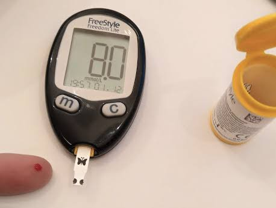
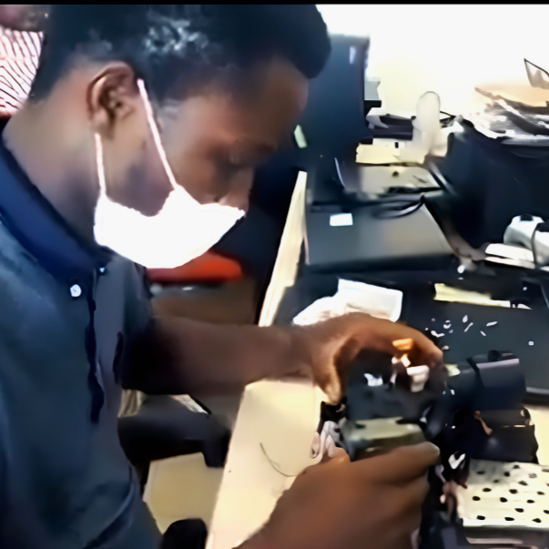

💡 Cliquez sur les points 1 et 2 pour découvrir les composants cachés derrière l'appareil !



1. L'Écran (Le Cerveau)
Un microprocesseur traduit les signaux électriques du capteur en chiffres compréhensibles pour mesurer la tension.
2. Le Brassard (Le Capteur)
Il contient un capteur de pression piézoélectrique qui convertit la pression de l'air en signaux électriques.
1. La Sonde (Le Cœur)
Elle contient des cristaux piézoélectriques qui vibrent pour émettre des ultrasons et créer une image.
2. L'Écran d'Affichage
Un ordinateur puissant transforme les échos des ultrasons en images en temps réel.
1. La Bandelette (Le Biosenseur)
Une bandelette réactive qui, au contact d'une goutte de sang, déclenche une réaction chimique.
2. L'Écran et la Puce
Une petite puce électronique mesure le courant électrique généré par la réaction chimique.

Alfred
Ingénieur Mécatronicien.
Il démonte et répare les équipements médicaux pour vous expliquer comment ils sauvent des vies.